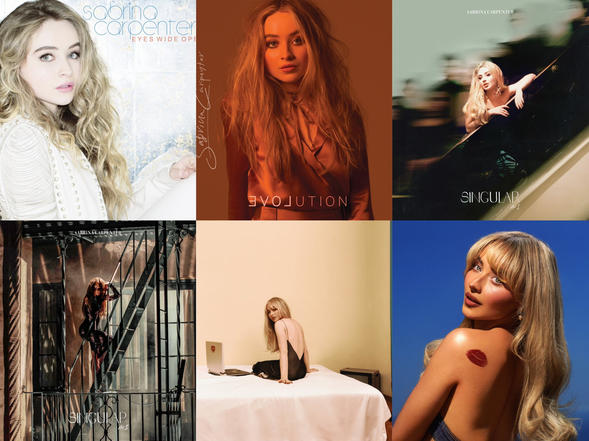

Sabrina Carpenter is an American singer, songwriter, and actress who has captured hearts with her catchy pop melodies, honest lyrics, and expressive vocals. Though she started her career on Disney Channel, Sabrina's music now blends pop with elements of R&B and indie, creating songs that are both relatable and danceable. Her work explores themes of love, self-discovery, and empowerment, making her a standout solo artist in today's music scene.
Group Members
Sabrina Carpenter (Lead vocals, songwriter)
Brian Malik Baptiste (Producer, collaborator)
Sarah Hudson (Songwriter, collaborator)
Jason Evigan (Producer)
Jorgen Odegard (Producer)
Favorite CD Releases & Reviews

juno
"Juno" is a vibrant, energetic track that captures the essence of Sabrina's playful style. Its catchy chorus and upbeat rhythm make it a favorite among fans, showcasing her ability to blend pop hooks with heartfelt storytelling.
tears
"Tears" delves into themes of heartbreak and healing, with emotive vocals and lush production. Sabrina's raw delivery and relatable lyrics resonate deeply, making this song a standout ballad in her repertoire.
looking at me
"Looking At Me" is a confident, empowering anthem celebrating self-assurance. With infectious beats and bold lyrics, Sabrina inspires listeners to embrace their individuality and shine in their own way.